New Character
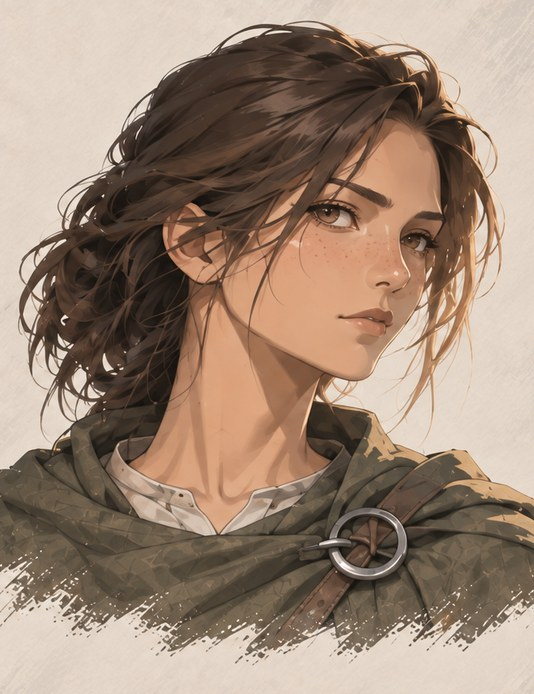
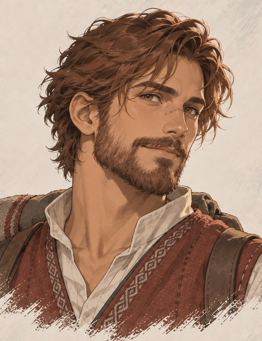
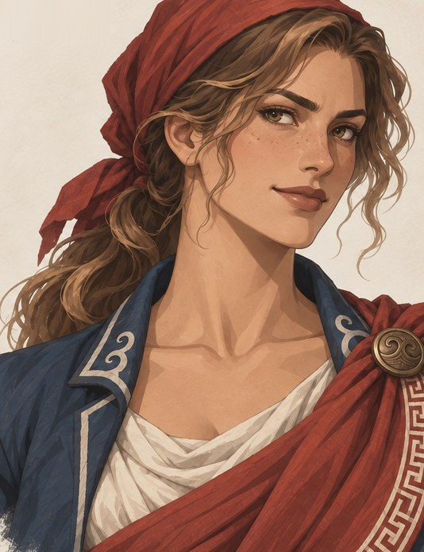
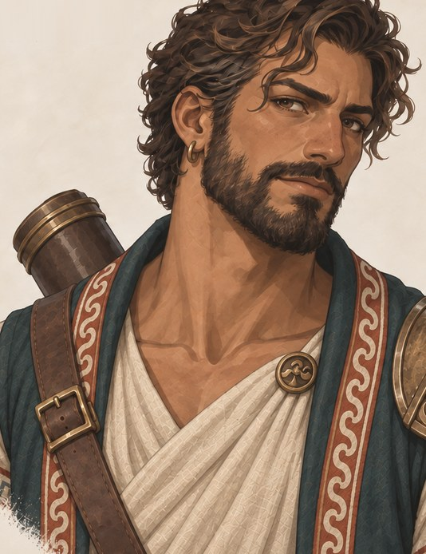
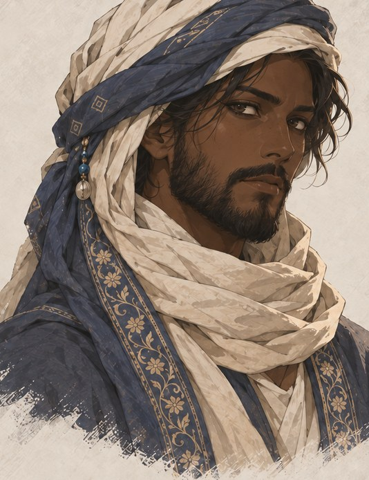
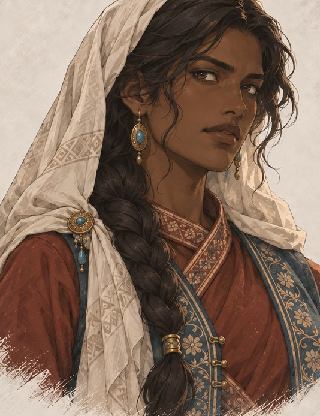
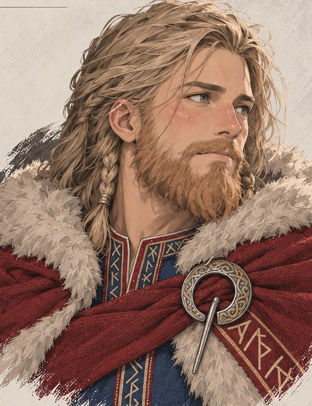
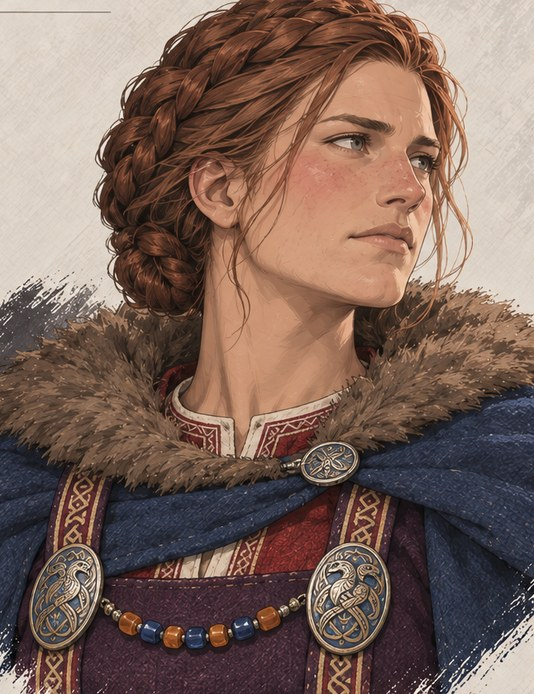
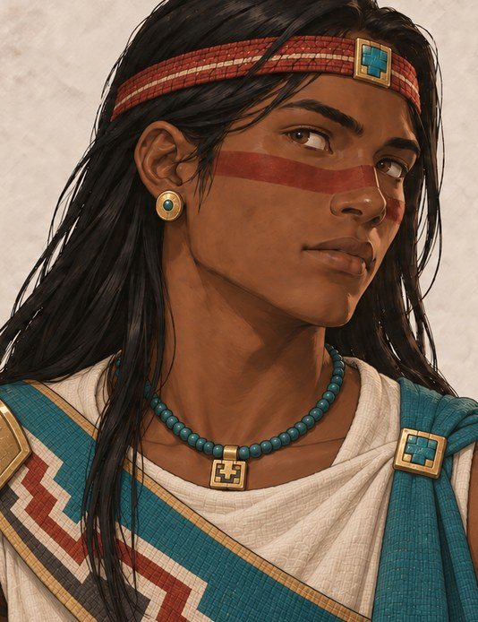
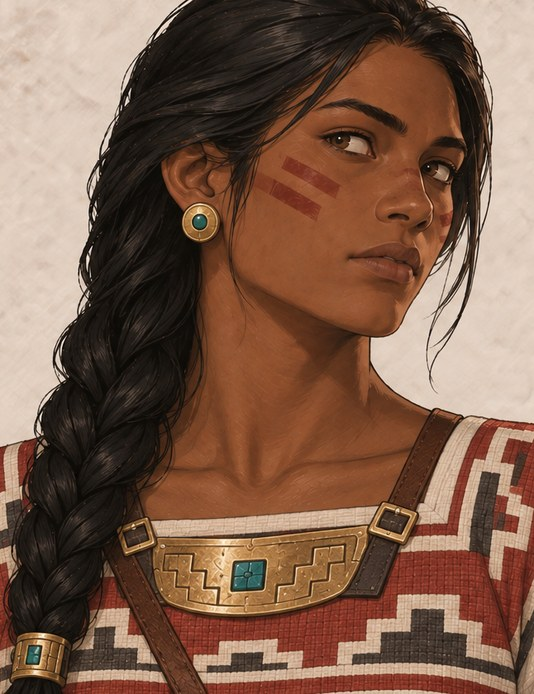
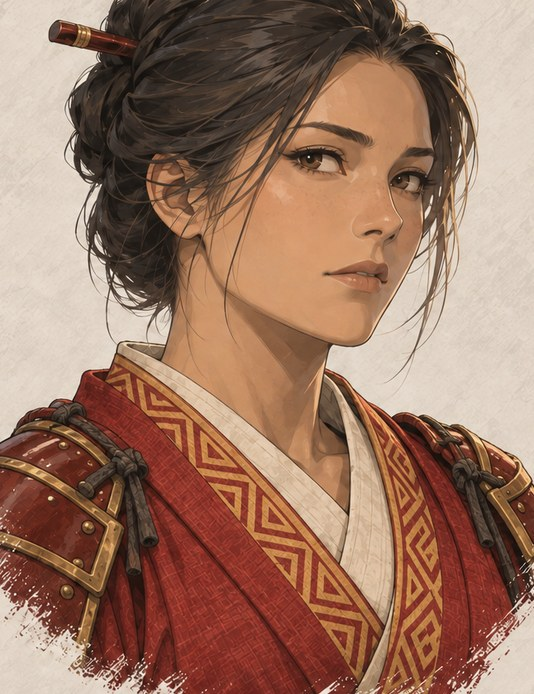
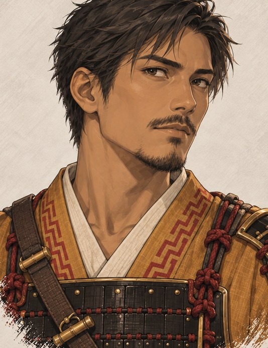
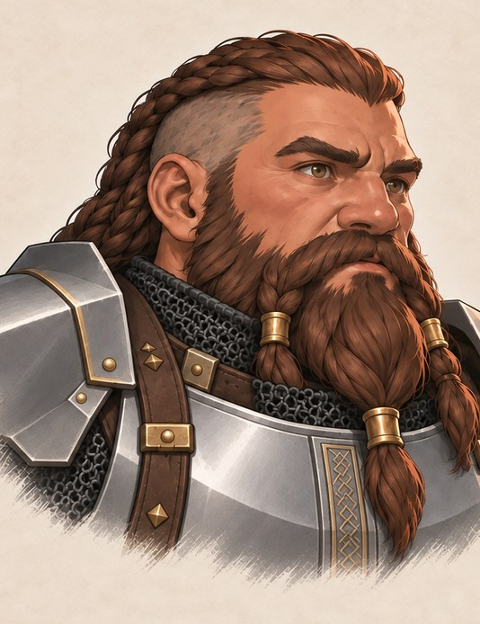
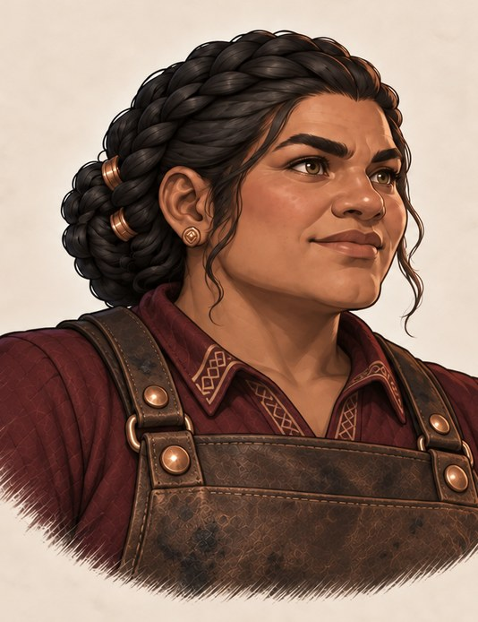
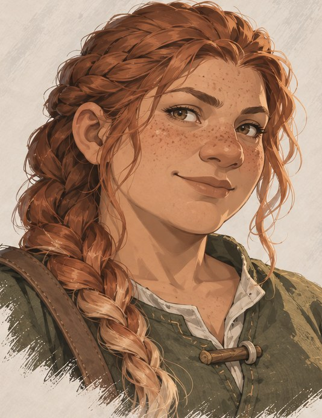
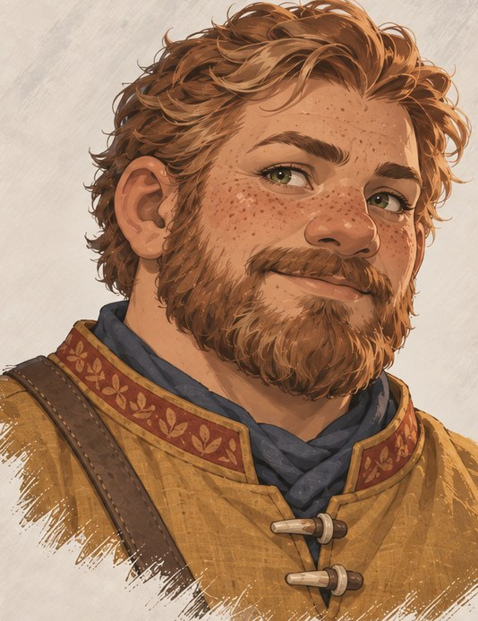
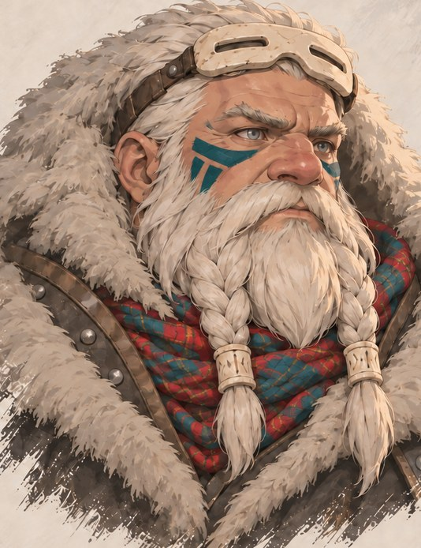
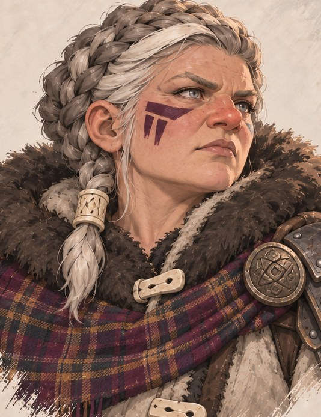
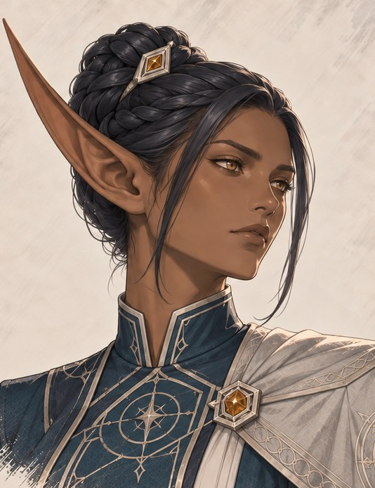
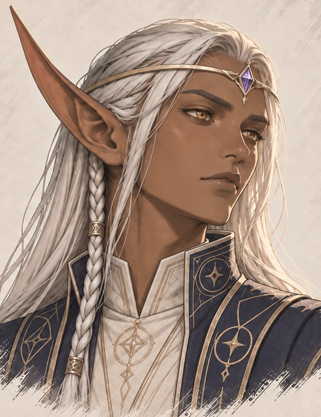
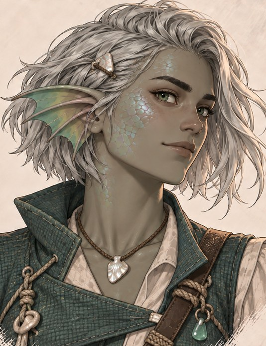
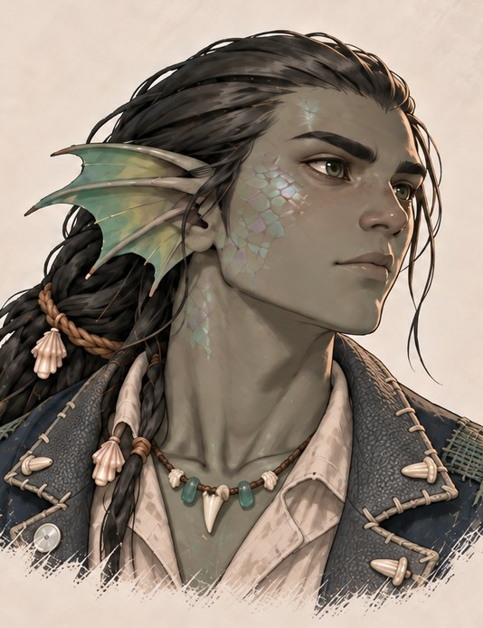
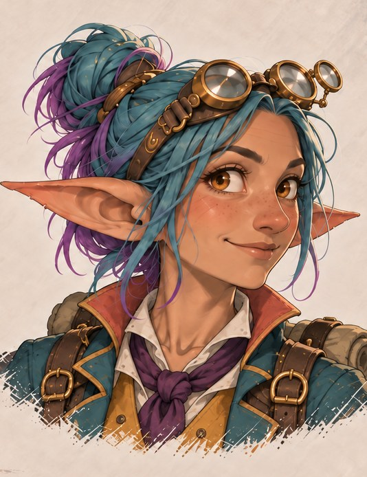
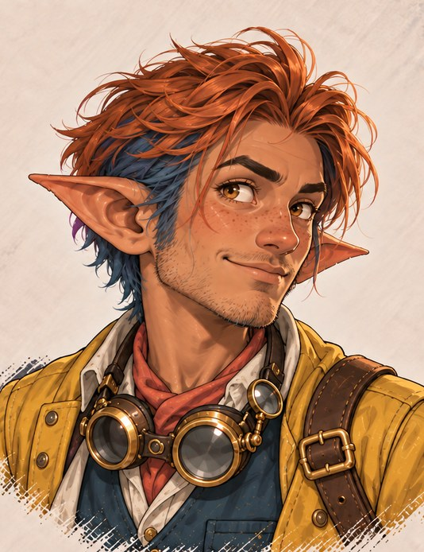
Heartland humans
“The plough follows the axe.”
Maritime humans
“A hull is only as sound as its worst plank.”
Desert humans
“The well remembers who dug it.”
Cold peoples
“A full sledge in autumn is a full belly in spring.”
Deep rainforest humans
“In the canopy, a call carries; a whisper drowns.”
Large islanders
“The kiln shows what the clay was hiding.”
Dwarves
“What the chisel says, the tongue can't unsay.”
Hill Dwarves
“A guest at the table brings luck to the house.”
Frosthold Dwarves
“The heir inherits the hammer and the grudges.”
High Elf
“The root knows what the leaf forgets.”
Tidekin sea elves
“The calmest landing hides the sharpest rocks.”
Gnomes
“A spring wound too tight will snap.”